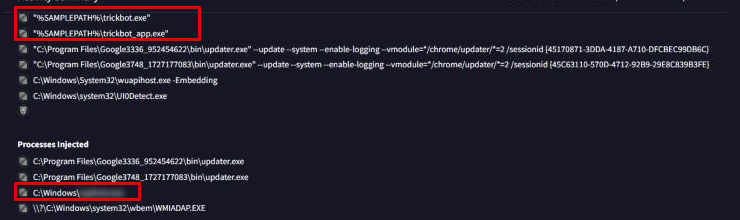
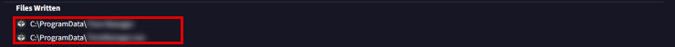
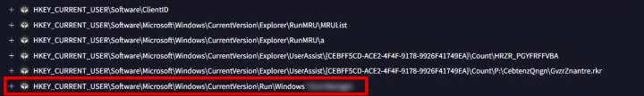
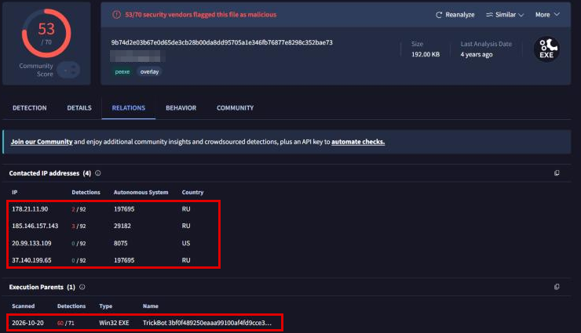

Trickbot - WIZARD SPIDER
- Lab: Trickbot - WIZARD SPIDER trên CyberDefenders. Nhóm Threat Intel, độ khó Medium, đã retired.
- Dữ liệu: file
hash.txtchứa SHA-2563BF0F489...4CB7C64Dcủa một mẫu Trickbot. - Công cụ: VirusTotal (tab Behavior gộp báo cáo của nhiều sandbox, tab Relations).
- Quy ước:
- Ảnh là ảnh chụp trang VirusTotal của mẫu và của file thứ cấp, chụp ngày 04/11/2026.
- Khung đỏ đánh dấu chỗ cần chú ý. Vùng làm mờ là đáp án (tên tiến trình, tên file, tên giá trị registry).
Tóm tắt kết quả
- Khi chạy, mẫu tách ra
trickbot.exevàtrickbot_app.exe. - Mẫu chèn mã vào một tiến trình hợp lệ trong
C:\Windowsvà vào 2 tiến trìnhupdater.execủa Google. - Mẫu ghi một file thực thi vào
C:\ProgramDatavà tạo một giá trị trongHKCU\Software\Microsoft\Windows\CurrentVersion\Runcó tên bắt đầu bằngWindows. - File thứ cấp (SHA-256
9b74d2e0...352bae73) có quan hệ với 4 IP, 3 IP thuộc hệ tự trị (AS) ở Nga. Execution Parents xác nhận file này do chính mẫu Trickbot của lab tạo ra.
Bước 1: cách mẫu kết nối WMI
- Mục tiêu: xác định thành phần mẫu dùng để kết nối WMI (Windows Management Instrumentation, giao diện để truy vấn thông tin hệ thống).
- Cách làm: mở tab Behavior, phần Capabilities do CAPA phân tích (mở rộng mục này để thấy đủ danh sách).
- Nhận định:
- CAPA ghi nhận khả năng "connect to WMI namespace via ..." kèm tên một COM component.
- Mẫu kết nối WMI trực tiếp qua COM, không gọi
wmic.exehay PowerShell. Vì vậy không sinh ra tiến trình dòng lệnh dễ bị chú ý. - Hướng giải: tên component nằm ngay sau chữ "via" trong dòng CAPA đó.
Bước 2: kỹ thuật thực thi né tránh
- Mục tiêu: ánh xạ cách mẫu chạy mã sang MITRE ATT&CK.
- Cách làm: trong tab Behavior, mở phần MITRE ATT&CK Tactics and Techniques, tìm technique có tên Process Injection.
- Nhận định:
- Mẫu chèn mã vào tiến trình khác (process injection). Mã chạy trong bộ nhớ của một tiến trình hợp lệ nên khó bị công cụ bảo vệ endpoint phát hiện.
- Hướng giải: ID technique là mã
T....đứng cạnh tên Process Injection.
Bước 3: tiến trình bị chèn mã
- Mục tiêu: tìm tên tiến trình bị chèn mã.
- Cách làm: trong tab Behavior, xem mục Shell Commands và Processes Injected.

- Nhận định:
- Tiến trình đích nằm thẳng trong
C:\Windows, là tiến trình giao diện người dùng luôn chạy dưới quyền user. Mã độc chạy trong đó thừa hưởng quyền của user và lẫn vào hoạt động bình thường. - Hướng giải: tên tiến trình là dòng đã làm mờ trong Processes Injected.
Bước 4: file thả vào ProgramData
- Mục tiêu: tìm file thực thi mẫu ghi vào
C:\ProgramData. - Cách làm: trong tab Behavior, xem mục Files Written.

- Nhận định:
- Tên file giả dạng một tiện ích quản lý thời gian của Windows. File này là payload thứ cấp.
C:\ProgramDataghi được mà không cần quyền quản trị, và ít người dùng mở ra xem.- Hướng giải: tên file là dòng thứ hai trong Files Written.
Bước 5: persistence qua registry
- Mục tiêu: tìm khóa registry giúp mã độc tự chạy lại sau khi khởi động lại hoặc đăng nhập.
- Cách làm: trong tab Behavior, xem mục Registry Keys Set.

- Nhận định:
- Khi mở rộng dòng này, dữ liệu của giá trị là đường dẫn file trong
C:\ProgramDataở Bước 4. - Persistence nằm dưới
HKEY_CURRENT_USER, chạy mỗi khi user đăng nhập và không cần quyền quản trị. - Hướng giải: đường dẫn khóa đầy đủ là dòng đã khoanh đỏ, gồm cả tên giá trị.
Bước 6: hạ tầng C2 của file thứ cấp
- Mục tiêu: tìm nơi file thứ cấp liên lạc.
- Cách làm:
- Trong tab Relations của mẫu gốc, mục Dropped Files, lấy SHA-256 của file
.exeở Bước 4. VirusTotal ghi nhận 4 bản khác nhau của file này. - Tra từng SHA-256, xem tab Relations và Behavior.

- Nhận định:
- Bản file thứ cấp này chỉ có quan hệ với IP, không có tên miền. 3 IP thuộc AS ở Nga có engine phát hiện độc hại. IP còn lại thuộc AS 8075 của Microsoft.
- Mẫu gốc và file thứ cấp phải tra riêng, vì phần mạng của C2 nằm ở báo cáo của file thứ cấp.
- Hướng giải: tên miền C2 nằm trong DNS Resolutions của một trong các bản file thứ cấp khác (mục Dropped Files của mẫu gốc liệt kê đủ SHA-256).